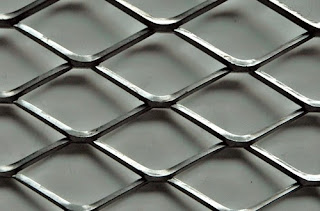
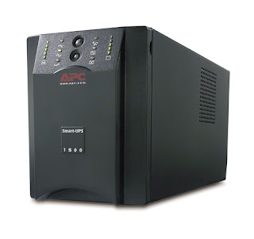

Jual Floor Deck Harga Murah di Dumai ☎ ??? (www.dis.or.id)
Salah satu komponen terpenting dari sebuah bangunan baik itu kecil, sedang, besar maupun megah sekalipun pasti memerlukan atap. Bisakah anda membayangkan bagaimana sebuah bangunan tanpa atap? Apakah kita masih bisa menyebut bangunan tersebut sebagai bangunan? Mungkin lebih tepat bila kita menyebutnya bangunan yang terbengkalai. Keberadaannya amatlah penting sehingga berkembanglah beragam jenis atap sesuai kebutuhan konsumen. Oleh karena itulah kita pastinya membutuhkan atap di setiap pembangunan. Berat atap yang saya maksud disini tidaklah seberapa, karena berat yang tertopang pada galvalum tersebut sudah tersalurkan dengan baik sehingga tidak akan membebani atap maupun galvalum. Ada pula atap galvalum dengan bentuk unik seperti atap lengkung, gelombang dan lain sebagainya.
Distributor & Supplier Floor Deck (Bondex)

Anda yang punya rencana pembangunan dan membutuhkan material untuk pengecoran lantai mungkin bisa menggunakan floor deck Dumai. Umumnya Floor Deck digunakan sebagai alas pada saat proses pembuatan lantai maupun atap dari dak beton. Untuk bahan utamanya sendiri umumnya berasal dari plat baja jenis galvanized dilengkapi dengan tulang. Sedangkan untuk panjang dan juga lebarnya ada beberapa variasi.
Jika anda saat ini sedang mebutuhkan floor deck Dumai dengan kualitas yang mumpuni, anda bisa langsung mengunjungi situs dis.or.id. Anda juga bisa langsung memesannya ataupun hanya ingin mengetahui detail harga yang di patok dari floor deck Dumai tersesbut.
Info Pemesanan Selengkapnya
Google Maps: https://www.google.com/maps/d/u/0/viewer?mid=1vSGA7eD7ctB-ierGsro9yf6LdDAQHeLS&ll=-6.2537250295094555%2C106.82745&z=15
Note: https://www.facebook.com/notes/distributor-of-industrial-supply/kontraktor-jasa-floor-hardener/1783168878649658/
Event: https://www.facebook.com/events/534395173592364/
Portfolio Produk: https://www.facebook.com/1681607345472479/photos/?tab=album&album_id=1685055588460988
Distributor & Supplier Besi Beton

Karena perkembangan suatu proses pembangunan maka hasil bola material yang dapat mendukung pembangunan tersebut agar terlihat lebih kokoh dan juga awet. Pengaplikasian besi beton pada suatu bangunan kini telah banyak digunakan karena banyak keunggulan yang diberikan oleh Besi beton.
Besi beton polos sangat jarang digunakan kecuali digunakan sebagai kolom.
Kedua jenis besi beton di atas dapat anda beli dengan mengunjungi situs dis.or.id. Kualitas dan mutunya pun telah terjamin.
Distributor & Supplier Steel Grating

Plat Grating tersebut dibuat dari jenis baja dengan kualitas yang tinggi kemudian dilas antara satu dengan yang lain. Grating ini disusun dari baja berkalit dan dilas di bagian permukaan silangnya. Permukaan atas grating ini bergerigi sehingga saat di aplikasi pada bangunan tidak terasa licin. Terbuat dari bahan yang hot deep galvanis sehingga grating tidak mudah berkarat meskipun terkena air hujan di setiap harinya. Bahan yang berkualitas ini memudahkan para konsumen dalam melakukan pembangunan dengan memperoleh hasil maksimal. Plat Grating dapat Anda temui dimana saja.
Karena disana terdapat steel grating dengan harga yang sangat ekonomis pas dengan kantong anda. Memesan steel grating di dis.or.id pastinya anda tidak akan merasa rugi.
Distributor & Supplier Pipa (Hitam/Gas, Galvanis)
.jpg)
Kekuatan dari pipa hitam gas ini memang sangat kuat, tak heran bila untuk kebutuhan konstruksi bangunan yang berat material ini tidak pernah absen. Pipa hitam banyak digunakan untuk kebutuhan konstruksi bangunan karena ia kokoh dan tahan karat karena sudah terlapisi dengan lapisan stainless steel. Karena telah diproduksi khusus untuk kebutuhan pertambangan minyak gas, tak heran bila banyak orang yang mengira bahwa nama asli dari pipa ini adalah pipa gas. Sifatnya yang tahan karat menjadikan pipa ini dapat diaplikasikan disegala perubahan cuaca Indonesia. Ukuran pipa hitam yang terjual adalah ½ inc sampai 40 inc. Hubungi saja kontak kami untuk melakukan konsultasi mengenai kebutuhan pipa hitam gas galvanis bagi proyek industri anda.
Distributor & Supplier Kawat Bronjong/Gabion

Umumnya, kawat ini dipasang di tebing yang rawan sekali mengalami longsor, terutama ketika musim hujan tiba. Inilah mengapa kawat ini tidak akan berkarat meskipun terkena air hujan. Agar tidak berkarat sehingga bisa bertahan dalam kurun waktu yang lama, kawat ini dibuat dari bahan galvanis yang anti karat. Kawat ini berfungsi agar tidak terjadi gerusan akibat arus air yang mengakibatkan tiang penyangga rusak di mana hal ini bisa berakhir dengan rubuhnya jembatan.
Jika anda saat ini sedang membutuhkan kawat bronjong, anda bisa langsunng mengunjungi dis.or.id. Karena, disan anda bisa mendapatkan kawat bronjong dengan berbagi ukuran dengan kualitas dan mutu terbaik.
Distributor & Supplier WF H-beam

Besi WF kini banyak dikenal sebagai salah satu jenis profil baja Struktural yang berkualitas. Jenis besi ini banyak dimanfaatkan sebagai bahan konstruksi baja. Kekuatan yang dimiliki oleh besi ini memang terbukti kuat dan sangat tinggi. selain itu, besi ini ternyata memiliki kualitas yang terjamin sehingga tidak diragukan lagi. Anda juga bisa lebih gampang saat memakai besi ini karena sifatnya yang tidak terlalu berat dan bisa dibilang ringan dengan komponen yang seimbang.
Jika membawanya Anda juga tidak perlu khawatir keberatan karena besi ini lebih ringan dan praktis. Besi ini tergolong jenis besi yang ringan disertai dengan komponen yang sesuai sehingga Anda tidak perlu keberatan saat memakai jenis besi ini.
Besi Wf berkualitas tinggi bisa anda dapatkan dengan sangat mudah di dis.or.id. Ada baiknya anda langsung mengunjungi dis.or.id. Terdapat berbagai ukuran dari besi WF yang bisa anda jadikan pilihan sesuai dengan kebutuhan anda.
Distributor & Supplier Expanded Metal

Expanded metal ini merupakan lembaran baja yang berbentuk jala yang memiliki lubang-lubang yang homogen serta sangat pas jika dimanfaatkan untuk berbagai aplikasi selain pagar BRC. Fungsi expanded metal diantaranya untuk anak tangga pada tower dan ternyata banyak juga digunakan di dermaga/pertambangan/konstruksi lepas pantai.
Jika anda saat ini sedang mencari dan membutuhkan expanded metal, ada baiknya anda mengunjungi dis.or.id. Jenis ini dapat Anda gunakan sebagai pengaman partisi, pagar pembatas, penutup mesin, tanduk kendaraan, dinding panel, angin-angin dan masih banyak lagi. Kunjungi dis.or.id untuk memesan expanded metal dengan harga yang murah serta mutu yang terjamin.
Distributor & Supplier Plat (Hitam, Kapal, Bordes, Strip)
.JPG)
Berbicara tentang plat besi memang beragam, hal ini di tentukan dari seberapa besar dan tebal plat yang di inginkan.
Segera hubungi nomor dis.or.id dan segera order karena dis.or.id adalah agen resmi yang langsung mengambil plat hitam ini dari pabriknya.
Distributor & Supplier Atap Galvalum

Dewasa ini, banyak orang yang menggandrungi atap galvalum dikala pembangunan. Galvalum memiliki banyak kelbihan sehingga dia lebih banyak digunakan jika dibandingkan dengan kayu.
Primadona galvalum ini dinilai lebih efektif jika dibandingkan dengan galvanis. Selain memberikan banyak keuntungan, kesan pada rumah anda juga akan terlihat modern. Galvalum mempunyai berbagai ukuran yang sesuai dengan kebutuhan.
Besar kecilnya galvalum tergantung pada kebutuhan anda. Jika beban atap tidak terlalu berat, maka galvalum kecil adalah solusi anda. Harus diakui bahwa atap seng yang digunakan dapat menyebabkan rumah terasa panas. Bila anda mencari atap galvalum dengan berbagai ukuran, maka anda datang ke tempat yang tepat. Disini kami menyediakan galvalum yang tentunya sesuai kebutuhan dan dengan harga yang sangat kompromi khusus untuk anda yang membutuhkannya. Tapi kayu rentan dimakan oleh rayap.
Distributor & Supplier Atap Lengkung

Selain berfungsi sebagai atap sebuah bangunan baik itu rumah, kantor maupun stadion. Atap lengkung juga difungsikan sebagai peneduh bagi kendaraan. Atap dapat mempercantik bagian atas dari bangunan anda.
Macam bentuknya sendiri antara lain adalah atap lengkung, gelombang, datar, bahkan patah-patah. Salah satunya juga harus kuat menahan derasnya air hujan.
Karena apabila atap tersebut sudah tertembus oleh air. Bahkan tidak sedikit yang rela mengeluarkan gocek yang tidak sedikit mengingat harganya yang sedikit lebih mahal dibandingkan atap galvalum dengan model biasa. Terkadang, atap bangunan mereka merupakan atap dengan jenis atap lengkung. Bila anda tertarik untuk mempunyai atap lengkung pada bangunan anda maka janganlah ragu. Atap lengkung yang anda cari tentunya adalah atap dengan kualitas tinggi dengan harga terjangaku. Maka anda sudah berada di tempat yang tepat.
Distributor & Supplier Truss Canal C

Salah satu besi yang tidak kenal musim dan telah banyak menggantikan dan menggeser fungsi kayu sebagai pembangunan rumah anda. Jadi, galvalum adalah salah satu jenis baja terbaik dimana memiliki cirikas ringan dan tipis namun memiliki daya tahan, dan kekuatan yang sangat baik bahkan di klaim lebih baik bila kita bandingkan dengan baja konvesional. Besi kanal C ini amat populer dalam dunia pembangunan. Ini dikarenakan besi jenis ini mempunyai kekuatan yang dapat bertahan dalam jangka waktu yang lama. Besi kanal C bisa menjadi pilihan yang tepat bila anda ingin membangun rumah minimalis dengan desain modern. Besi ini tidak dibuat oleh tukang las biasa, melainkan di olah oleh pabrik yang khusus bergerak dibidang peleburan besi dan logam. Bagi anda yang sedang mencari besi kanal C maka saya merekomendasikan anda untuk mengujungi dis.or.id. Bila anda mencari besi kanal c dengan kualitas tinggi namun harga terjangkau maka anda sudah datang ke tempat yang tepat. Bila anda mencari kanal c atau truss maka anda sudah datang ke tempat yang tepat. Disini kami menyediakan berbagai macam kanal c dan truss sesuai dengan kebutuhan anda.
Distributor & Supplier Hollow Galvalum

Apakah anda sedang membutuhkan atau mencari informasi seputar hollow galvalum? Penasaran dengan fungsinya? Harganya? Atau keterangan keterangan lainnya. Penggunaan besi ini sebagai rangka atap rumah sudah mulai banyak digunakan dalam beberapa tahun terakhir ini. Bahkan kini besi ini sudah mulai menggeser penggunaan kayu pada rangka plafon.
Karena hollow galvalum ini dapat ditemukan di toko bangunan khusus yang keberadaannya juga sudah menjamur. Untuk anda yang sedang membutuhkan hollow galvalum dalam jumlah kecil ataupun partai besar, dan sedang mencari hollow galvalum berkualitas harga murah. Jika anda berencana membangun sebuah plafon, saran saya pilihlah ukuran yang saya sebutkan diatas. Studi penelitian telah mengungkapkan bahwa kerangkan plafon menggunakan jenis hollow ini bisa bertahan puluhan tahun. Disana sudah banyak info mengenai hollow galvalum, dari mulai ukuran, harga, berat dsb.
Distributor & Supplier Seng Gelombang

Apakah anda hendak mendirikan bangunan baru? Sebuah bangunan dapat berdiri tegak kokoh dan bernilai bukan cuman karena dinding dan permukaan lantainya saja. Baik itu bangunan besar dan kecil, tanpa atap yang berkualitas maka bangunan tersebut rentan kebocoran. Atap menjadi bagian penting sebuah bangunan yang harus diperhatikan. Saking pentingnya, pasti dimana ada bangunan maka disitu ada atap yang menaunginya. Meskipun begitu, nyatanya seng gelombang memiliki kekurangan yakni ia lebih cepat menyerap panas.
Bila anda sedang mencari seng gelombang dengan keunggulan dan kualitasnya. Distributor penjual seng gelombang sekarang ini sudah menyebar ke seluruh Indonesia, baik di kota-kota besar maupun kecil. Salah satu distributor yang terkenal akan kualitas dan jaminannya adalah dis.or.id anda dapat mengunjungi situs tersebut dan menjelajahinya.
Distributor & Supplier Plat Seng

Hal ini tidak lain dikarenakan plat galvanis lembaran memiliki ukuran yang lebih luas dan bermeter meter. Namun apabila anda membutuhkan nya hanya sedikit, misal untuk penyambungan, atau ingin mengganti beberapa bagian talang rumah anda, anda dapat membeli yang per meter saja. Namun apabila anda berencana membangun sebuah atap dari awal, sebaik nya anda membeli plat galvanis lembaran, karena kebutuhan anda banyak dan juga luas, sehingga yang lembaran ini akan lebih efektif untuk anda.
Sebuah rumah tidak akan bisa disebut rumah jika dalam komponen nya tidak ada atap nya. Lalu berapa harga plat galvanis 2018? Bila anda sedang mencari harga terbaru hari ini juga, anda dapat menghubungi kami karena kami menjual plat galvanis, galvalum dengan berbagai ketebalan dan ukuran.
Distributor & Supplier Genteng Metal

Berbicara tentang genteng metal memang akan identik dengan perbandingan metal vs keramik. Kami siap melayani pembelian dalam jumlah kecil ataupaun partai besar untuk tiap tiap brand tersebut. Perihal harga, karena kami distributor resmi maka akan kami berikan harga pabrik untuk anda.
Apakah anda mencari genteng metal? Silakan kunjungi official site dis.or.id dan temukan info menarik untuk anda.
Distributor & Supplier Besi Wiremesh

Jika anda membutuhkan besi lonjor yang membentuk anyaman anda dapat membeli jenis besi wiremesh pada kami. Besi wiremesh sering di anggap banyak orang adalah besi anyam karena strukturnya yang mirip dengan anyaman. Bentuk anyaman dari besi wiremesh sendiri bermacam-macam, ada yang membentuk kotak-kotak ada juga yang jajar genjang, anda dapat memilih sesuai kebutuhan. Dengan memiliki bentuk yang mirip seperti besi anyam, pemanfaatan besi ini sangat banyak terutama dalam dunia konstruksi, salah satunya adalah sebagai plat lantai dan dak beton. Jika anda hendak mengaplikasikan besi wiremesh, maka tentukan dulu kebutuhannya sehingga bisa menentukan jenis wiremesh mana yang cocok untuk diaplikasikan. Untuk bangunan bertingkat besi wiremesh yang digunakan adalah ukuran 8 sampai 10. Sedangkan untuk kebutuhan bangunan biasa menggunakan jenis wiremesh ukuran 4 sampai 6 sudah cukup kuat. Untuk informasi lebih detail, anda dapat menghubungi kontak yang telah tersedia.
Distributor & Supplier Pagar BRC

Pagar BRC (British Reinforced Concrete) adalah pagar yang terbuat dari besi beton dengan diameter 5mm – 8mm dimana ketebalannya tergantung dengan ketinggian pagar. Potongan besi berdiameter tertentu tersebut dig abungkan dengan bantuan mesin las wiremesh. Apalagi mengingat kekuatan pagar BRC tidak dapat diragukan lagi, karena pagar ini diproduksi dengan baja bertegangan tinggi U55 grade dengan tegangan ijin 2900kg/cm2 sekitar 2. Pagar BRC juga tahan karat karena lapisan besi telah terlindungi dengan galvanis. Pagar BRC memiliki daya tahan sampai > 10 tahun karena ia tergolong besi yang tahan karat karena sudah terlapisi dengan lapisan galvanis.
Distributor & Supplier Kawat Loket, Kawat Harmonika

Kawat loket harmonika sering sekali diaplikasikan pada kebutuhan kawat pagar dan penutup jendela, hal ini tentu tidak tidak lain karena struktur bentuk dari kawat loket harmonika sendiri mirip seperti anyaman yang kuat. Pemanfaatan kawat harmonika sendiri sangat banyak, apalagi mengingat bentuknya yang kuat seperti anyaman. Apalagi jenis kawat galvanis yang digunakan tahan karat dan korosi, sangat awet bila anda bandingkan dengan jenis kawat biasa. Anda dapat memesan kawat loket harmonika yang terlapis dengan galvanis untuk kualitas terbaik yang tahan korosi. Untuk informasi selengkapnya, anda dapat menghubungi kami, terlah tersedia kawat loket harmonika dengan diameter 1,5 mm – 4 mm, disertai lubang 20 mm sampai 70 mm tergantung dengan kebutuhan anda.
Distributor & Supplier CNP & UNP

Selain sebagai material konstruksi sambungan, besi kanal U banyak digunakan untuk kebutuhan penutup dinding / girts. Dilihat secara sekilas, spesifikasi dari besi UNP hampir mirip dengan besi WF. Besi UNP juga sering dikaitkan dengan besi CNP yang juga masuk dalam kategori kelasnya. Untuk bentuknya sendiri besi CNP memiliki bentuk yang melengkung dan membentuk huruf C, untuk itulah kenapa banyak orang yang menyebutnya sebagai besi profil C. Besi CNP sangat fleksibel dalam pengaplikasiannya karena ia dapat dimodifikasi dari plat koil dengan teknik cutting sehingga membentuk huruf C. Anda tak hanya bisa manfaatkan untuk kebutuhan konstruksi saja, bahkan untuk kebutuhan otomotif sekalipun.
Distributor & Supplier Besi Siku

Salah satu material besi baja yang memiliki banyak manfaat untuk kehidupan ini adalah besi siku, jenis material ini bahkan bermanfaat untuk kebutuhan rumahan. Bentuk besi siku sudah terukur sehingga bisa dijadikan penyangga yang bisa diandalkan. Hubungi saja kontak yang telah tersedia untuk mengetahui informasi pemesanan lebih detail.
Distributor & Supplier Hollow (Hitam, Galvanil, Galvanis)

Sekarang ini besi hollow pemanfaatannya sudah melebihi kayu, meskipun terbuat dari besi kualitasnya pun tidak dapat diragukan lagi.Sekarang sudah banyak orang yang beralih pemanfaatan dari kayu menjadi menggunakan besi hollow.Banyak orang yang mulai beralih dari pemanfaatannya yang menggunakan kayu beralih pada hollow hitam galvanil.Besi hollow saat ini menjadi material pengganti kayu yang sangat baik. Apalagi jika mengingat menggunakan besi hollow akan membuat pengerjaan konstruksi selesai lebih cepat. Tentu saja hal ini karena kelebihan yang ditawarkan oleh besi hollow sendiri tidak dimiliki kayu, material yang kokoh, pengerjaan cepat, dan tidak mudah rapuh. Tentu saja hal ini dikarenakan kekuatan yang dimiliki hollow galvanis tidak bisa dibandingkan dengan kayu, material ini juga lebih mempercepat pembangunan konstruksi. Besi hollow memiliki kekuatan yang lebih kokoh dan dapat mempercepat pekerjaan konstruksi karena strukturnya yang mudah diatur. Jika saat ini anda membutuhkan besi hollow, anda dapat menghubungi kontak yang telah tersedia atau kunjungi saja website resmi kami di dis.or.id. Kami telah menyediakan besi hollow hitam galvanil galvanis yang bisa anda pesan langsung. Apabila anda membutuhkan material hollow hitam, kami dapat melayani kebutuhan anda tersebut dengan berbagai spesifikasi ukuran. Kami pun merupakan distributor relasi dari dis.or.id yang menawarkan produk hollow hitam galvanil galvanis dengan kualitas terbaik dan harga yang murah. Terdapat besi hollow dengan berbagai ukuran yang bisa anda pesan langsung, misalnya: ukuran besi hollow 40 x 40 x 2 mm x 6 Meter, 50 x 50 x 3 mm x 6 meter hingga ukuran 150 x 150 x 5 mm x 6 meter.Segera hubungi kontak kami untuk info lebih lanjut. anda dapat memesan besi hollow hitam galvanil galvanis tersebut dengan berbagai ukuran, baik ukuran besi hollow 40 x 40 x 2 mm x 6 Meter, 50 x 50 x 3 mm x 6 meter sampai dengan ukuran 150 x 150 x 5 mm x 6 meter. Kami menyediakan besi hollow hitam dengan ukuran 40, 50, 150 dan lain sebagainya dengan panjang rata-rata 6 meter. Untuk anda yang membutuhkan besi ini, kami menyediakan ukuran besi hollow yang variatif 40 x 40 x 2 mm x 6 Meter, 50 x 50 x 3 mm x 6 meterr sampai dengan ukuran 150 x 150 x 5 mm x 6 meter. Jika anda tertarik memesan besi hollow ini maka tentukan dulu total kebutuhan anda, hubungi kami segera untuk info lebih lanjut!Selain sebagai pengganti material kayu, besi hollow yang kami jual dapat anda manfaatkan untuk kepentingan teralis, pintu besi, pagar, dan lain sebagainya.Bagi anda yang membutuhkan besi hollow, anda dapat menghubungi kami, besi hollow yang kami tawarkan cocok untuk kebutuhan pagar, pintu besi, teralis, dan lain sebagainya.Selain sebagai pengganti material kayu, besi hollow banyak dimanfaatkan untuk kebutuhan pintu besi dan teralis.
Distributor & Supplier Pipa Pancang

Pipa pancang yang memiliki fungsi cukup penting dalam sebauh proyek tentu saja tersedia di sini. apalagi jika berbicara mengenai proyek di atas permukaan laut. sedangkan dari segi spesifikasi maupun ukuran, pipa pancang cukup variatif dan bisa di sesuaikan dengan kebutuhan. Selanjutnya, bagi Anda yang ingin mendapatkannya, jangan khawatir karena saat ini banyak sekali distributor penawar pipa pancang. Di sini Anda akan mendapatkan pipa pancang berkualitas yang siap di gunakan. Bukan hanya kualitas bahannya saja yang bagus tetapi juga untuk pembuatannya. Dengan begini, maka dalam penggunannya, pipa pancang juga bisa di aplikasikan secara maksimal.
Jasa Pondasi Bor (Strouss/Borepile)

Dalam pembangunan rumah, tentu saja setiap orang menginginkan hasil terbaik sehingga bisa membuatnya puas, termasuk juga untuk pengeboran pondasi. terkait dengan hal itu, Anda bisa menggunakan jasa pondasi bor sebagai jalan keluar sehingga pada proyek akan menghasilkan pengeboran yang sempurna. Bahkan tidak perlu jauh-jauh karena di sini juga menerima pemesanan jasa tersebut. untuk masalah kualitas pun tidak perlu di pertanyakan lagi karena hasilnya akan sangat terjamin mengingat pelakunya adalah mereka yang sdah berpengalaman dan merupakan jasa profesional. Akan tetapi, perlu di ketahui pula kalau selama proses pengeboran tersebut akan ada suara bising yang cukup mengganggu sekalipun tidak menimbulkan getar. Jika mengenal pengeboran lebih jauh, sebenarnya ada dua jenis yakni manual dan otomatis dengan penggunaan mesin. Dalam hal ini jika tidak ingin menggunakan jasa bor, Anda bisa membeli mesinnya. Untuk masalah kualitas hasilnya pun sama saja jadi tidak perlu khawatir. sedangkan jika di lihat dari segi kualitas, sebenarnya kedua jenis ini sama-sama bagus.
Distributor & Supplier Genset (New/Second)

Genset atau generator set yang menghasilkan tenaga listrik kini telah banyak di gunakan sebagai alternatif. Produk yang satu ini merupakan penghasil ternaga listrik yang dalam penggunaannya memanfaatkan bahan bakar berupa solar. Dalam pembeliannya sendiri, genset bisa berupa yang baru maupun yang bekas. Nah, untuk pembelian keduanya, bisa Anda dapatkan pula di DIS.
Dengan harga genset yang cukup tinggi, memang akan lebih ringan jika membeli genset yang sudah second. Bagaimana tidak, jika kualitas yang di tawarkan saja hampir sama sedangkan harganya lebih rendah. untuk merk nya pun, genset juga variatif. Dengan demikian Anda bisa menyesuaikan dengan kebutuhan maupun keuangan.
Distributor & Supplier UPS

Untuk alat elektronik yang satu ini, biasanya memang belum cukup terkenal kecuali untuk dunia elektro. Dalam hal inI tentu saja akan sangat penting untuk memilikinya. Sejauh ini tentu saja akan sangat penting memiliki UPS terutama bagi pengguna komputer. Sedangkan dari jenisnya sendiri, UPS memang sangatlah bervariasi. Baik dari segi kualitas maupun kapasitas yang di milikinya. Kalau untuk penjualannya sendiir, bisa di dapatkandi DIS dengan kualitas yang sangat memadai. Sedangkan dalam penjualan, di sini kami menawarkan UPS dengan kualitas terjamin dan harga memadai.
Distributor & Supplier Forklift (Second)

Jika Anda sedang ingin membeli forklif, jangan khawatir karena di sini juga menyediakannya. karena itu pula, penjualan forklif sendiri banyak di temukan di mana-mana. Sedangkan dalam pembeliannya, bisa memilih baik yang baru ataupun yang bekas. Nah, jika Anda sedang mencari bekas pun di DIS juga bisa di dapatkan. Kalau untuk kualitasnya sendiri, meski bekas tetap saja terjamin. Penjualan tersebut bisa di lakukan dengan mudah dengan langsung merujuk pada distributor forklif.
Jasa Pembuatan Moulding Inject

bahkan kalau berbicara kualitas hasilnya di sini, bisa di pastikan akan sangat bermutu. Tidak hanya terbatas pada kuantitas, akan tetapi, juga kualitas moulding inject ini sangatlah terjamin mutunya. Anda tidak perlu khawatir terkait hal itu karena moulding inject yang di hasilkan pun juga merupakan kualitas yang terbaik. Selanjutnya, silahkan Anda sesuaikan pilihannya dengan kebutuhan yang sedang Anda cari.
Jasa Pembuatan Sparepart Mesin Produksi / Alat Berat

Dalam setiap proyek pembangunan, adanya alat berat atau sparepart tentu bukanlah hal yang asing pula. Sedangkan mengingat fungsinya pun, sparepart ini cukup penting juga menjadi perhatian tersendiri. Karena itulah, untuk memilikinya, silahkan Anda memilih jasa terpercaya di mana salah satunya di tawarkan di DIS. Apalagi mengingat dukungan tenaga profesional yang di sediakan sehingga sparepart Anda akan lebih aman. Terkait dengan hal itu, perlu Anda ketahui bahwa pembuatan sparepart yang salah, bisa jadi akan membahayakan si pengguna. sedangkan untuk jasa profesional di sini akan menghasilkan DIS dengan kualitas tinggi sehingga akan lebih aman lagi untuk di aplikasikan.
Jasa Service Elektronik (Kompor Gas, Dispenser, Mesin Cuci)

Kini elektronik memang semakin banyak di gunakan di kalangan masyarakat. Oleh karena itu, sebagai penyeimbang, tidak heran pula jika jasa service elektronik yang melayani perbaikan seperti kompor gas, dispenser dan mesin cuci terus bermunculan. Dengan service ini, maka ketika ada masalah dengan barang Anda, jika belum parah bisa kembali berfugsi seperto semula. Sedangkan untuk masalah kualitas yang di tawarkan DIS, jangan khawatir karena tingkat keamanan dan perbaikannya sangat tinggi dna terjamin. Nah, apa pun barang yang perlu di perbaiki, kini akan kembali berfungsi seperti semula. Hanya saja kebanyakan orang memang melakukan service elektronik saat ada keluhan yang di rasakan saja.
Banyak manfaat yang bisa didapatkan hanya dengan memasang atap sebagai peneduh bangunan anda. Karena tanpa atap, maka sebuah bangunan akan kehilangan jati dirinya sebagai bangunan yang sebenarnya. Dari rumah paling kecil hingga bangunan termegah sekalipun pasti membutuhkan atap sebagai kebutuhan utamanya. Kebutuhan primer seperti atap, memang tidak dapat diragukan lagi fungsinya. Tergantung dari kebutuhan, tentunya anda dapat memilih atap sesuai keinginan anda. Karena semua bangunan pastinya membutuhkan atap agar dapat terlindung dari serangan cuaca ringan bahkan ekstrim sekalipun. Maka, dengan senang hati kami akan membantu anda.